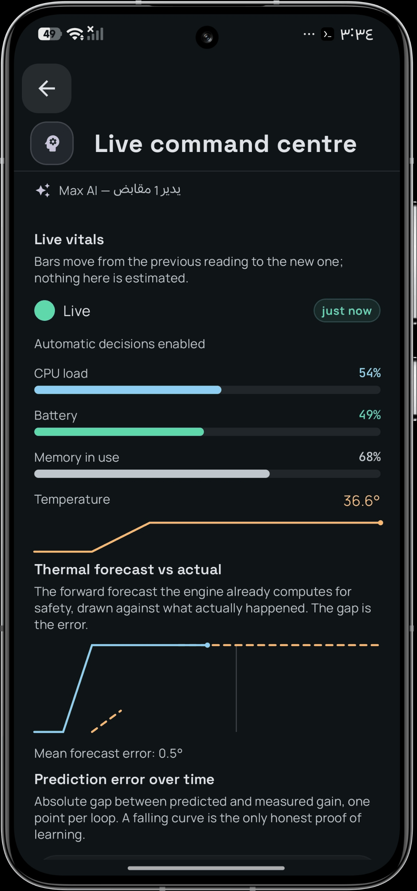
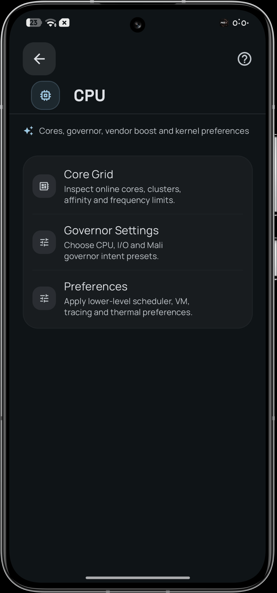
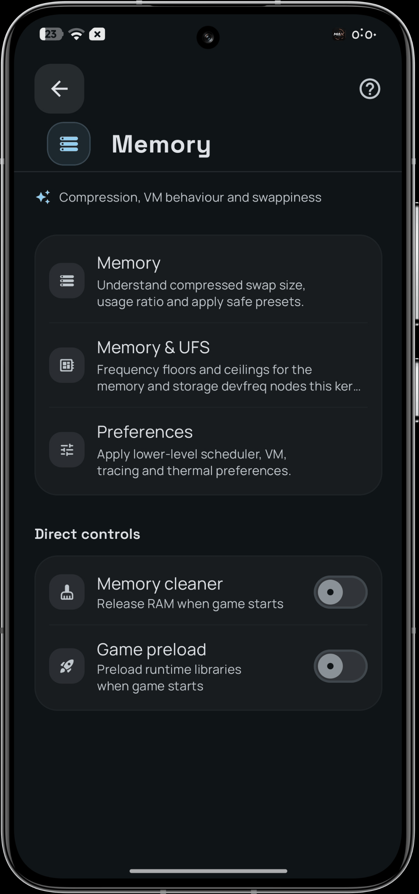
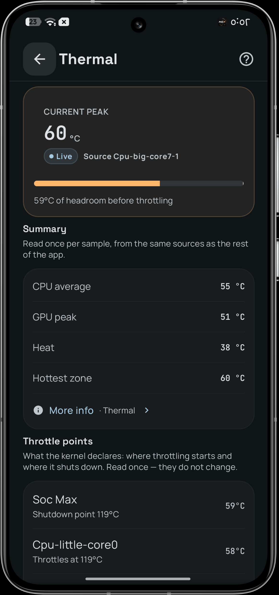
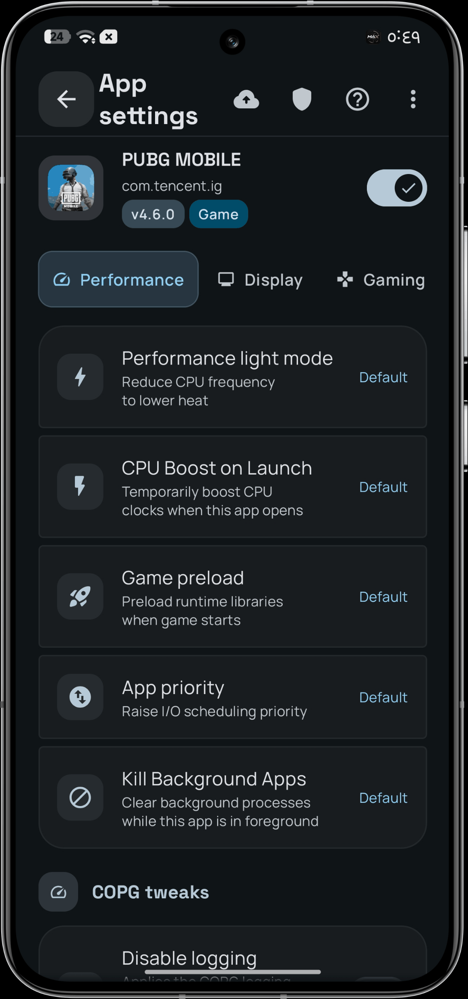
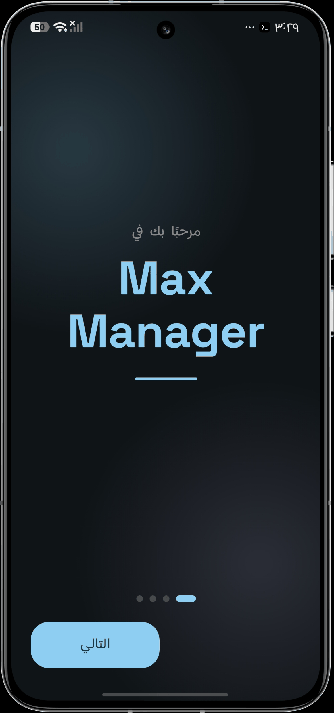
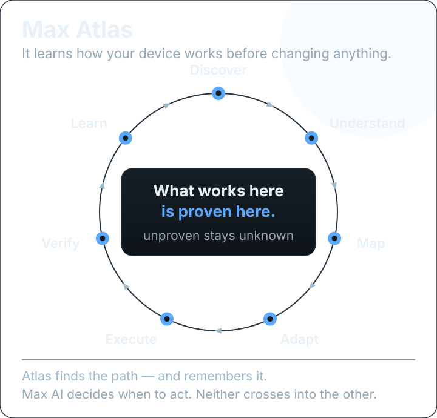

Absent is not disabled.
Your device is read before a control is drawn. If a listing proves an interface is not there, it is not listed — no greyed-out switch, no promise the hardware cannot keep.
Systemless module · rooted Android 10+
MaxManager reads the interfaces your kernel actually exposes, writes through one audited path, and reads every change back. A control that cannot work on your phone is absent — not a switch that does nothing.

Homereal capture · 02/72
They are not settings. They are why a screen can look empty on a phone that cannot do the thing — and why a value can look unhelpful instead of confident.
Your device is read before a control is drawn. If a listing proves an interface is not there, it is not listed — no greyed-out switch, no promise the hardware cannot keep.
Every change goes through one arbiter, then is read back from the device. A value that did not settle is reported with a rollback attempted — never counted as a win.
A number the app cannot measure is shown as status_unknown or an em dash. It never fills the gap with a plausible zero.
Max AI, Max Atlas and per-app policy are off until you turn them on, and the safety layer keeps absolute priority in the write path.
Every frame below is a real capture from a device: 1162 × 2480, one status-bar choice, dark theme throughout. Open any frame for the full-size image.
02Home
 03Max AI
03Max AI
 04Max AI plan
04Max AI plan

05Live control
51CPU hub
52Memory hub
54Thermal 20ZRAM
20ZRAM
 22Charging
22Charging

27Per-app 29Per-app gaming
29Per-app gaming

01Start 70Game lobby
70Game lobby
 72Side panel
72Side panel
The pieces do not overlap. One decides what is possible here, one is the only thing allowed to write, and one decides what should change — with a safety layer that outranks all of them.

Which interfaces exist, what they are called, what unit they speak, whether they can be written — and what actually settled last time.
One arbiter, one ownership ledger, read-back verification, a rollback when a value does not hold, and a drift guard that looks again later.
One measured change at a time, chosen from the vocabulary Atlas actually found on your phone. Off until you switch it on.
Ownership is written next to every value. You can see whether a control was set by you, by a per-app profile, by the module, or left at the kernel default — and manual ownership can be taken back at any time.
Each area has its own hub. The line under each name is the app's own description of the area, quoted from the interface.
Cores, governor, vendor boost and kernel preferences. Every cluster is read from the platform, not guessed.
GPU frequencies and graphics-specific vendor parameters, with manual bounds and the vendor boost pipeline.
Compression, VM behaviour and swappiness. The engine reads memory stall pressure, not fill percentage.
Refresh rate, colour and canvas scale, with a custom resolution and palette screen.
Touch, frame pacing and scheduling latency — the settings people call "touch response", named by what they do.
Temperatures, throttling and thermal parameters. Trip points are never written, on any device.
Charging, bypass, sleep and battery health, including a charge ceiling and aggressive doze.
Re-run ART compilation with a chosen filter, reset compiled state, and read storage health.
TCP congestion control, fast-open, SACK and ECN, socket reuse, I/O scheduler tunables and link state.
Output devices, streams and declared effects. Read-only by design — and a device that declares no effects says so.
Anything your device does not expose in one of these areas is simply not listed. There is no dead switch to explain away. Read the full feature list.
Two phones of the same model can expose different interfaces. Two kernels can name the same interface in different units — and let you write one but not the other. Atlas asks each interface a question and remembers the answer.

SUPPORTEDA reviewed route exists, and a write was verified on this device.WRITABLEA route is eligible now; success is not yet proven here.READ_ONLYThe device answers reads; no write route is eligible.NEEDS_ADAPTERThe feature is visible; this build has no proven way to drive it.UNAVAILABLEAbsence was proved by a listing that lacks the name.NEVER_TOUCHA reviewed safety rule forbids writing this interface — always.UNKNOWNNothing measured, or nothing answered and absence was never proved.Absence must be proved. A failed read is not an absence: only a successful listing that lacks the name proves the name is not there. Everything else stays UNKNOWN, because a blocked read and an unsupported feature look identical from the outside.
Not a chatbot, and not a table of magic values. A loop that acts on the controls Atlas found on your phone: pick an objective, make the smallest change that could close the gap, check safety, execute through the normal path, then measure what happened.

Manual control is the default state. When you do enable the engine, the safety layer still outranks it — including while the engine is off. And where a game with its own profile is in front, Max AI steps aside and keeps watching safety only.
The vendor thermal policy is read, never overridden. A ceiling the firmware holds below the request is reported as clamped — not "lifted".
Open Apps, pick a package, and give it its own treatment. Every app shows its effective state in plain words: per-app control is off · using the global profile · app override active.
Performance profile · refresh rate · render resolution · thermal ceiling · CPU and GPU governor — only the ones your kernel reports, and only governors supported by every CPU policy · foreground priority lock · I/O priority boost · per-app resolution downscale · a per-app reset.
A profile is a named set of behaviour you can apply, tune, save and share. On export, each value carries where it came from: a shipped default, a value you changed, or a measurement claimed by whoever exported it. On import, the app says exactly what it accepted and refused.
A value measured on another chipset says so. It is not a measurement on yours. Profiles are also reachable from Quick Settings, so a profile can change without opening the app.
Reading, measuring and diagnosing are first-class screens, not a debug menu bolted on afterwards. Nothing here phones home; a support report is assembled locally and leaves only if you hand it over.
The live picture: current readings, what automation is allowed to do now and why, what it would do next, and whether it can be undone.
A draggable readout of frame rate, CPU and RAM over any game — up to three independent monitors, each with its own fields and position.
Live logcat with filtering and search, plus a shareable report whose glossary is written into the log file itself.
Per-process CPU and RAM, force-stop, SIGKILL, and a floating overlay when you need it over something else.
A live diagnostic centre, per-control route health, a reproducible device blueprint, and the honest "why didn't it work?" answer for a per-app setting.
Interactive hardware checks on the device itself — screen colours, multi-touch, keys, vibration, audio routing, microphone level, sensors and the panel's own declared capabilities.
The interface is a measuring instrument. Its rules are written value by value in the repository, and a gate fails the build when the document and the code disagree.
The accent follows your own theme, so the product takes the shape of the phone it runs on. Positive, caution and critical are fixed and contrast-checked, because a thermal alert that looks decorative is a correctness bug.
MHz, percentages, temperatures and core counts never reflow as they change. A value the app does not have is an em dash — not a zero with a unit after it.
Motion exists to explain a change, and anything longer is decoration. Reduced-motion preferences are respected on this page and in the app.
Light and dark, a themable key colour and a custom palette screen. 84 locales, with right-to-left enforced by a gate rather than by hope. Read the design language.
MaxManager ships as a module: nothing in /system is modified permanently, and uninstalling puts everything back.
Download MaxManager-<version>.zip from the latest green workflow run or a release. Do not flash MaxManager-developer-bundle.zip — that one is for ROM developers.
Choose Install from storage and select the module zip. KernelSU and KernelSU Next are supported, and the installer checks that the daemon arrives for your ABI before it reports success.
Accept the superuser prompt your root manager shows when MaxManager asks. Without it the control plane cannot write; with Shizuku alone, several read-and-write tools still work.
Setup explains what your device exposes before you touch anything. Manual control is the default; no engine starts on its own.
| Requirement | Value |
|---|---|
| Android | 10 or newer (API 29), built against API 37 |
| Root | Magisk · KernelSU · KernelSU Next |
| Architecture | arm64-v8a · armeabi-v7a |
| Second layer | Shizuku, where it can help — never a substitute for the module |
| Chipsets | Dedicated strategies for Snapdragon · MediaTek · Exynos · Tensor · Unisoc; everything else through discovery |
Take a backup of your boot image before flashing, as with any root module. Rooting is your decision and your responsibility. If the module fails to reach a stable boot twice in a row, it disables itself and says so in its own description.
Thirty-three judgements run before the compiler: sixteen assertions, and seventeen tools measuring themselves. A checker that cannot fail proves nothing, so each one is deliberately broken and must name the rule it was meant to catch.
| Gate | What it refuses to let through |
|---|---|
kt_balance | Unbalanced braces, unterminated strings or comments, malformed XML |
code_health | Cleanliness violations, debt above its declared ceiling, undisclosed assets |
i18n_coverage | Wrong format specifiers, duplicate keys, folder, picker and locale-config drift |
resource_compile | Invalid resources, judged by real aapt2 — not by a look-alike |
rtl_guard | Directional padding and icons that do not mirror |
license_audit | GPL code appearing anywhere in the release path |
source_manifest | The tree drifting from its declared file digest |
readme_assets | Broken or unsafe assets and links in this documentation |
screenshot_gallery | A gallery that drifted from the folder it is generated from |
| Not verified in this repository | Why |
|---|---|
| Actual hardware behaviour | Units and OPP tables vary by vendor; a write settling needs the physical device |
| SELinux policy correctness | No AOSP tree in this environment to run neverallow against |
| Boot behaviour, anti-bootloop | Needs a device that boots; the installer's own counter is the evidence |
| Visual output: RTL, motion, theme | Needs a renderer and a screen — the captures are the evidence |
| A signed release artifact | The signing secret is absent by design; a CI run with the keystore verifies it |
A green build means it compiles and the tests pass. It does not mean a write settles on your hardware. That sentence is a rule in this project, not a hedge — verification.md lists what is proven, what runs without a device, and what needs a phone.
The short version of the latest release. The full history lives in one file at the repository root.
A scrollable page and a simplified design; presets on the colour-scheme screen; and options to disable the persistence-profile notifications.
Per-app resolution downscale for game apps, global renderer options, and support for KernelSU's emulated soft reboot.
A large set of stale tweak settings was removed, including refresh-rate settings in both per-app and global screens, with the remaining tweaks adjusted.
Earlier releases: 5.1 expanded localization from 17 to 84 languages; 5.0.4 made the service event-driven and lowered the minimum to Android 10; 5.0 rebuilt the interface and added Setup, backup and Quick Settings tiles. Read every release
Yes, for the full control plane. MaxManager is a systemless module for Magisk or KernelSU: the app reaches the kernel through one audited root bridge, and the daemons run as system-side processes. Shizuku (ADB level, no root) is detected too and unlocks several read-and-write tools, but it is not a substitute for the module.
Probably — but you do not have to guess. MaxManager resolves capabilities per interface before showing anything, so a control your device does not expose never appears as a switch that does nothing. Open it and read the map: that answer is about your phone, which is better than any list.
No. Manual control is the default state, and Max AI, Max Atlas and the per-app engines are things you switch on. When you do, the safety layer still has absolute priority.
status_unknown instead of 0?Because 0 is a claim. The project forbids fabricated telemetry: when it does not know, it says so rather than showing a plausible-looking zero. A blank-looking field is more honest than a wrong number.
Three independent layers. Values are read back after being written, and a mismatch is surfaced with a rollback attempted. A drift guard re-checks later, because a setting can silently revert. And the installer disables itself if the module fails to reach a stable boot twice in a row.
No telemetry, no analytics, no silent uploads. The diagnostic report is built locally and minimized, and it leaves your device only if you hand the file over yourself. The support report is not a screenshot.
A public repository is not the same thing as an open-source project. MaxManager is closed-source software; the repository is its product page, its ROM-integration kit and its engineering record. No right is granted to use, copy, modify or distribute without the copyright holder's prior written permission. Third-party components keep their own licences, listed individually in the notices.
This page is the tour. These are the answers you reach for afterwards.
Send the device, the ROM, the root manager, and what the app showed. If it said status_unknown, say so — that is a fact about your device, not a mistake on your part.